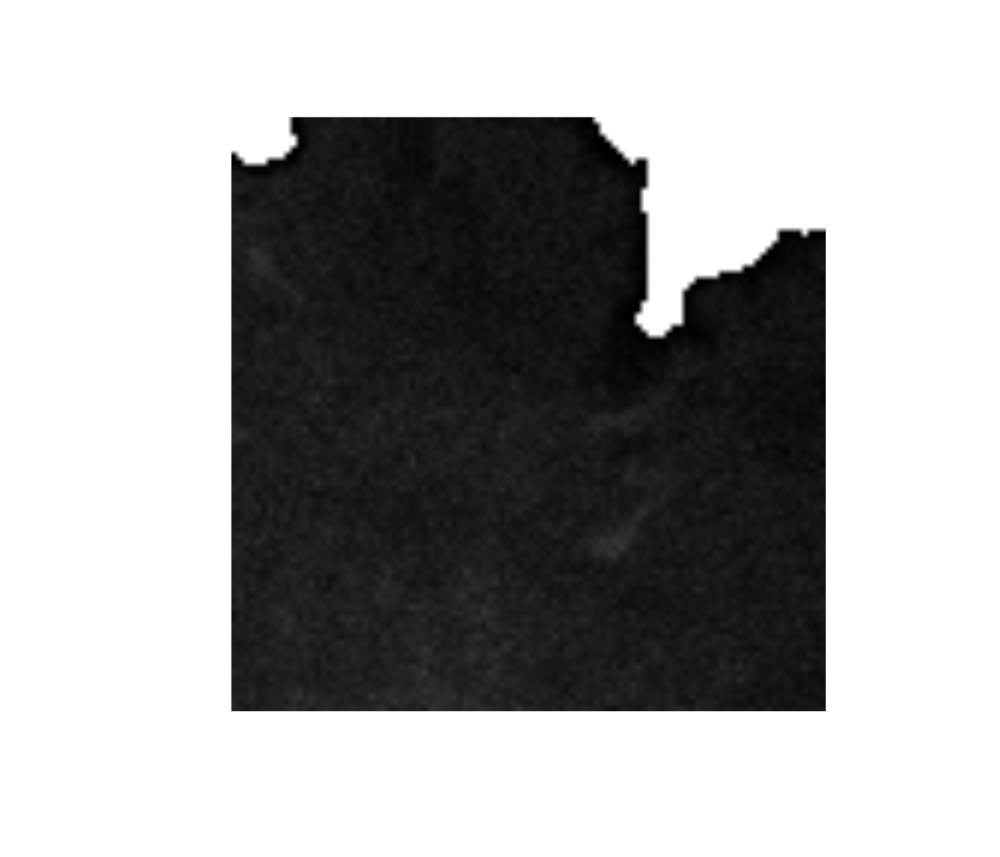

Thresholding Image Stacks
2019-05-29
thresholding-image-stacks.RmdStacks of Images
50.tif is a TIFF file which is a stack of 50 images of a bit of a cell taken over a short space of time (i.e. it’s a video).
img <- ijtiff::read_tif(system.file("extdata", "50.tif",
package = "autothresholdr"))
#> Reading 50.tif: an 8-bit, 100x100 pixel image of unsigned
#> integer type with 1 channel and 50 frames . . .
#> Done.
dim(img)
#> [1] 100 100 1 50Let’s display the first 3 frames:
#> Using basic display functionality.
#> * For better display functionality, install the EBImage package.
#> * To install `EBImage`:
#> - Install `BiocManager` with `install.packages("BiocManager")`.
#> - Then run `BiocManager::install("EBImage")`.
and the last 3 frames:
#> Using basic display functionality.
#> * For better display functionality, install the EBImage package.
#> * To install `EBImage`:
#> - Install `BiocManager` with `install.packages("BiocManager")`.
#> - Then run `BiocManager::install("EBImage")`.You’ll notice that these images are almost identical. That’s because they’re images of the same area taken very quickly one after another. There are two ways to threshold an image stack like this. One is the naiive way: find a threshold based on every pixel in the stack, then pixels below the threshold are excluded (set to NA). Let’s try that:
library(autothresholdr)
naiively_threshed_img <- apply_mask(img, "tri")
attr(naiively_threshed_img, "thresh") # The threshold chosen by "Triangle" is 4
#> [1] 4
#> attr(,"ignore_black")
#> [1] FALSE
#> attr(,"ignore_white")
#> [1] FALSE
#> attr(,"ignore_na")
#> [1] FALSE
#> attr(,"autothresh_method")
#> [1] "Triangle"
#> attr(,"class")
#> [1] "th" "integer"Now let’s display the first 3 frames and the last 3 frames:
#> Using basic display functionality.
#> * For better display functionality, install the EBImage package.
#> * To install `EBImage`:
#> - Install `BiocManager` with `install.packages("BiocManager")`.
#> - Then run `BiocManager::install("EBImage")`.
#> Using basic display functionality.
#> * For better display functionality, install the EBImage package.
#> * To install `EBImage`:
#> - Install `BiocManager` with `install.packages("BiocManager")`.
#> - Then run `BiocManager::install("EBImage")`.If you look closely, you can see that the threshold mask is (slightly) different for different frames. Let’s highlight the pixels which are sometimes thresholded away, sometimes not:
#> Using basic display functionality.
#> * For better display functionality, install the EBImage package.
#> * To install `EBImage`:
#> - Install `BiocManager` with `install.packages("BiocManager")`.
#> - Then run `BiocManager::install("EBImage")`.
So (unsurprisingly), it seems that around the edges of the cell (where the signal from the cell is more feint), the pixels are sometimes thresholded away, sometimes not. There are also some seemingly random pixels within the cell which are sometimes thresholded away, sometimes not.
Now, given that you know that the cell is more or less stationary and you want the threshold to get rid of the non-cell bits and keep the cell bits, its reasonable to assert that the mask should be the same for every frame. It’s possible to apply the same mask to every frame, and to compute this mask, it makes sense to incorporate information from all of the frames. This is what mean_stack_thresh() and med_stack_thresh() do. mean_stack_thresh() computes the mask based on the mean of all of the frames (gotten by calculating the mean intensity of the stack at each pixel position). med_stack_thresh() uses the median instead of the mean. They’re both very similar. If you don’t know which one to use, just use mean_stack_thresh().
Let’s visualize them both:
ijtiff::display(mean_stack_thresh(img, "tri"))
#> Using basic display functionality.
#> * For better display functionality, install the EBImage package.
#> * To install `EBImage`:
#> - Install `BiocManager` with `install.packages("BiocManager")`.
#> - Then run `BiocManager::install("EBImage")`.
ijtiff::display(med_stack_thresh(img, "tri"))
#> Using basic display functionality.
#> * For better display functionality, install the EBImage package.
#> * To install `EBImage`:
#> - Install `BiocManager` with `install.packages("BiocManager")`.
#> - Then run `BiocManager::install("EBImage")`.You can see that the results of mean_stack_thresh() and med_stack_thresh() are similar but not identical. Both do a fine job.
Note that if the cell (or whatever is recorded over the course of several frames) is not stationary (or almost stationary), then mean_stack_thresh() and med_stack_thresh() are not appropriate.